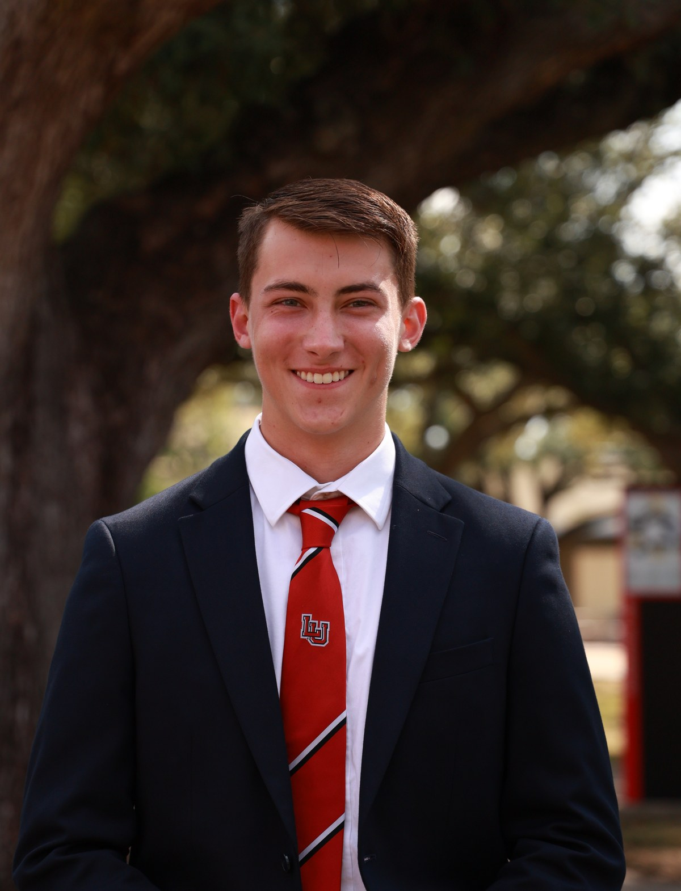

Education
Lamar University
B.S. Mechanical Engineering
- GPA
- 3.4 / 4.0
- Expected graduation
- May 2029
- Academic recognition
- Dean’s List · Fall 2025

Matthew W. Brandenburg
I enjoy taking ideas from CAD into the shop, especially when the work involves launch vehicles, mechanisms, and hands-on manufacturing. I’m currently building that experience through student engineering teams and Lamar’s Engineering Fabrication Lab.
Current roles & education
A quick view of the teams I work with and where I am academically.
B.S. Mechanical Engineering
LUNAR · NASA Student Launch
AIAA · Lamar University Student Branch
ASME · Lamar University Student Section
Lamar University
Engineering focus
I’m most useful where design decisions, manufacturing constraints, and team coordination meet.
SolidWorks, mechanism development, packaging, interfaces, and design reviews.
CAM, CNC machining, additive manufacturing, process selection, and assembly.
Launch-vehicle integration, work coordination, documentation, and practical problem solving.
Major projects
Launch-vehicle CAD, systems integration, packaging, and design leadership for LUNAR’s USLI program.
Active · Design SpecialistAdjustable wearable mechanism development with linear actuators, structural interfaces, and safety-driven design.
2025–2026 · Design & ManufacturingPrecision components, boat-tail studies, CAD validation, and mechanical integration across rocket subsystems.